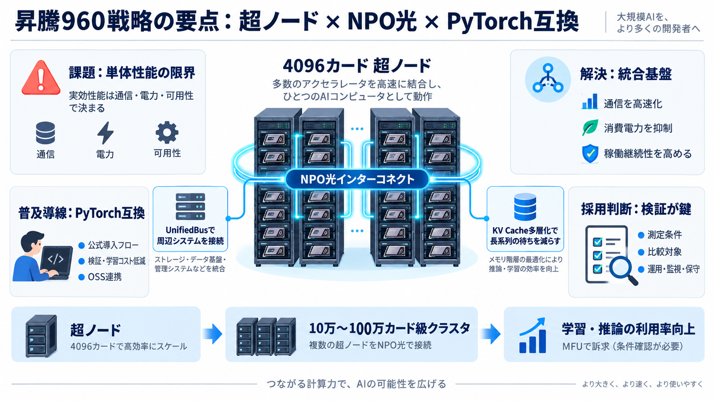

目的
学習・推論の
利用率を上げる
利用率を上げる

硬い計算基盤
華为は「AI向けの計算基盤」を、超ノード×NPO光インターコネクト×PyTorch互換で強化すると訴求している。
要約対象：全联接大会2026の講演要旨（コミュニティ要約）＋周辺導線断片
単体性能の限界
AIは計算だけでなく、通信・電力・可用性によって実効性能が左右される。記事は「チップ」より「超ノード／クラスタ」単位で効率を語ろうとしている。
超ノード発想
記事の中心は、8GPUサーバーの延長ではなく、4096カード級の「超ノード」を基本単位にしてスケールさせる設計思想。
NPO光インターコネクト
昇腾960超ノードはNPO（近封止型光学）を採用し、多数の光モジュール削減で消費電力を抑え、可用性も高めるとされる。
統一バスで束ねる
周辺サブシステム（鲲鹏超节点、OceanStor M900、KV Cacheなど）を、統一的な相互接続で束ねる構図が示される。
長系列に備える
長系列向け記憶として、KV Cacheの多層アーキテクチャが挙げられている。通信だけでなく“待ち”を減らし、実効性能に寄せる発想。
二正面作戦
記事は、(i) NPO光インターコネクト等の統合基盤と、(ii) 開発者エコシステム（PyTorch互換・オープン運用）をセットで語る。
最短導入を作る
Linux基金会の支援下で、昇腾がPyTorch公式から直接インストールできる“算力プラットフォーム”になった、という主張。
開発者指標を採用根拠へ
CANNのオープン運用で外部開発者比率が初めて61%を超えた等、開発者数・装机量・月活といった指標が普及根拠として語られる。
比較の落とし穴
電力削減・可用度・寿命などの数値は説得力がある一方、測定条件・比較対象・ベンチ定義が不明だと再現性が担保できない。
採用判断のチェック
公式PyTorch対応はプラスだが、導入後のデバッグ・監視・MLOps・保守体制まで含めて“自社パイプライン”に接続できるか検証が必要。
結論
記事の強みは「統合ハード」×「PyTorch互換の普及導線」を同時に提示する点。一方で採用には、数値と指標の出典・条件を追加調査して裏取りする姿勢が妥当。
※入力データの周辺UI/導線（OSC/Gitee/DevOps等）の断片は、今回の華为講演内容との直接対応が明確ではない。
No references found